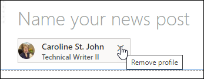
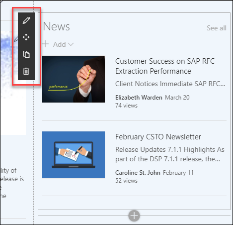
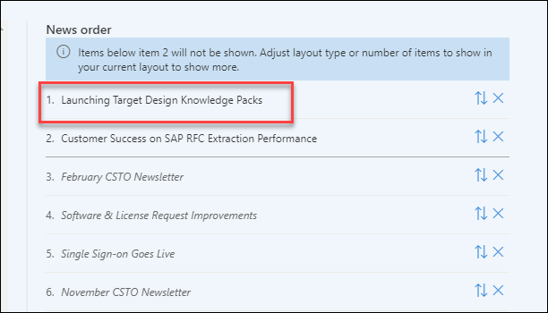
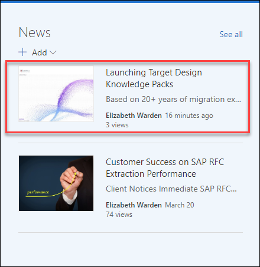

To post an article to the Product news feed on Syniti Connect:
Launch the Product page of Syniti Connect.
Click Add > News Post in the News pane.
Select the Product Development template.
Click the Create page button.
Enter the article title in the Name your new post field.
Remove the default profile and enter your own name.

Type in your article; sometimes the copy/paste feature doesn’t work.
Click the blue plus icon to add a new web part to easily format the article. If you’ve mentioned a contact for the article, be sure to add that person’s profile.
Click the Post News button.
Click Edit on the top right of the page.
Click in the News section for the edit toolbar to appear.

Click Edit web part; the News pane opens on the right.
Scroll down and expand Select news to organize.
Drag and drop the new article to the top of the list. It may display on the left panel and you’ll have to drag it over to the right.

Click the X at the top right corner to close the window.
Click the Republish button; your article now appears at the top of the news tread.
